ECON 1116 • Principles of Microeconomics • Chapter 11
Market Power — Monopoly and Price Discrimination
Forty thousand fans, one Uber app, and an algorithm that sets the price — what happens when a single firm is the market?
Dr. Richeng Piao
Department of Economics Northeastern University
Learning Objectives
11.1
Identify the five sources of monopoly power — and tell physical moats from digital moats
11.2
Find a monopolist’s price & quantity with the 5-step MR = MC method, and explain why MR < P
11.3
Calculate the deadweight loss of monopoly — and weigh rent-seeking against the innovation defense
11.4
Classifyfirst-, second-, and third-degree price discrimination — from airlines to AI pricing
11.5
Apply antitrust law, compute CR4 and HHI, and judge when contestability disciplines a monopolist
Quick Recall — Chapter 10
In perfect competition, where does price end up in the long run — and what is economic profit?
Why can’t a competitive firm raise its price even one penny above the market?
Today’s pivot: what changes when there are no competitors and no entry — when the firm is the market?
Discuss with your neighbor — 90 seconds.
Hook — The Concert Lets Out
An Ariana Grande concert ends. 40,000 fans open Uber at once — ride demand spikes fourfold in 90 seconds.
The algorithm deploys a surge multiplier: dormant drivers log on (supply rises), price-sensitive riders opt out (demand falls). Wait times settle in minutes.
On a New Year’s Eve, Uber switches surge OFF as a goodwill gesture:
No price signal → no new drivers appear
Wait times spike; many requests go completely unfulfilled
Castillo (Econometrica, 2025): surge raises welfare ~2% — but the firm that owns the algorithm decides who pays
Market Power
the firm doesn’t just join the market —
it dictates the terms
Chapter 10 was the firm too small to move the price. Now: the opposite extreme.
Section 1 · LO 11.1
Sources of Monopoly Power
Every monopoly rests on a barrier — the only question is what kind
The Polar Opposite of Perfect Competition
Last chapter
Price-taker. Identical product, free entry, sells all it wants at the market price — but can’t charge a penny more. Flat demand: P = MR.
This chapter
Monopoly. The sole seller, no close substitutes. It is the industry, so it faces the entire downward-sloping demand curve.
Monopoly — a single firm is the only seller of a good with no close substitutes. Market power — the ability to raise price without losing all your customers (a downward-sloping firm demand curve). A monopolist has the maximum of it.
Market power is a spectrum: perfect competition (none) → monopolistic competition & oligopoly (some, Ch 12–13) → monopoly (the most).
Barriers to Entry — the Moat
Barriers to entry — obstacles that keep new firms out, letting incumbents sustain economic profit in the long run.
20th century
Physical moats — railroads, oil wells, steel mills. Barriers made of capital.
21st century
Digital moats — software ecosystems, data, network effects. Lock in billions at near-zero marginal cost.
What Is Market Power? — The Google Case
Search, YouTube, Maps, Gmail, Android, Chrome — one firm, the whole ecosystem.
Market power — the ability to have some control over the price. A price-taker (Ch 10) has none; Google has a lot.
In 2021, Google’s market value was nearly $2 trillion.
It sells advertising worldwide — companies pay to show up more prominently in search results.
Some advertisers pay over $50 per click; the average is closer to $11.
Barriers to entry are the key to the market power of monopolies.
When Market Power Draws a Lawsuit
January 2023: the U.S. Department of Justice sued Google for monopolizing digital advertising technologies.
That’s the same ad-auction business from the last slide — the $11-a-click engine behind a near-$2-trillion company.
Having market power is legal. Abusing it to lock out rivals is what antitrust targets.
We’ll return to the full Google antitrust story — and its remedy — in §11.5.
Five Sources of Monopoly Power
Most real monopolies combine several — but each starts here.
1. Control of a key input. Own a resource rivals can’t replicate — ore, land… or software.
2. Switching costs & network effects. The cost of leaving — and the pull of where everyone already is.
3. Product differentiation & branding. Make consumers see your product as genuinely one-of-a-kind.
4. Economies of scale & natural monopoly. One firm serves the whole market more cheaply than two.
5. Government-created monopoly. Patents, franchises, licenses — the state grants exclusivity.
1 · Control of a Key Input
Physical — rubber, 1900s
Britain moved rubber trees to blight-free Asian plantations. When Ford tried to copy it — “Fordlandia,” 1927 — Amazon leaf blight destroyed it. The barrier was biological.
Digital — Nvidia, 2020s
~86% of AI accelerator chips. But the moat is CUDA — 20 years & 4M+ developers built on it. Rewriting that code costs years.
The H100 GPU costs ~$3,320 to make and sells for ~$28,000 — an 88% gross margin that only an extreme switching cost can defend.
The input that matters is no longer the silicon — it’s the software ecosystem locked on top of it.
Deep Dive — Fordlandia & the Rubber Monopoly
Fordlandia today — Ford’s plantation town, reclaimed by the jungle.
Latex tapped from the rubber tree — the input Britain controlled.
The barrier: Britain moved rubber-tree seeds to blight-free plantations in Asia, cornering global supply — a monopoly on the key input.
Why Ford failed: in the tree’s native Amazon, leaf blight raced between close-planted trees and destroyed Fordlandia. The barrier was biological.
Same logic, a century later: control the input rivals can’t replicate — rubber then, CUDA now.
Control of a Key Input → Strategic Location
Modern example: Starbucks’ location strategy.
The key input: Starbucks secures prime real estate in high-traffic spots — busy corners, campuses, transit hubs.
Location premium: a Starbucks by Tufts Medical Center charges $3.65 for brewed coffee vs $2.95 at a store farther away.
The “third place”: comfy seats + Wi-Fi turn shops into destinations — so it can charge more, reinforcing market power through location control.
The Premium Spot — Starbucks at Tufts Medical Center
High-traffic location by the medical center.
Freshly Brewed Coffee: $3.65
Prime, high-traffic real estate → $3.65 for a basic brewed coffee. The captive foot traffic is the barrier.
Two Blocks Away — Same Coffee, $2.95
A store farther from the foot-traffic hub.
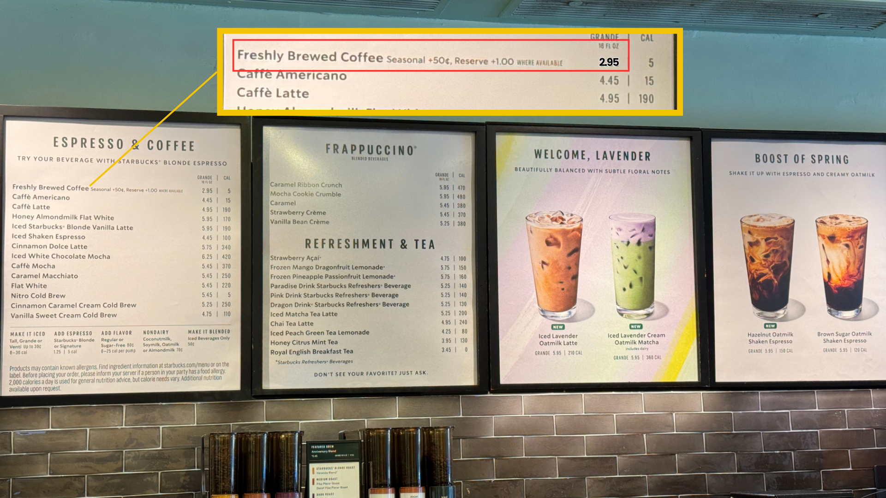
Freshly Brewed Coffee: $2.95
Same coffee, $0.70 cheaper — the gap is the location premium. Control the prime spot, and you control the price.
Control Over the Key Factor of Production — AI Chips
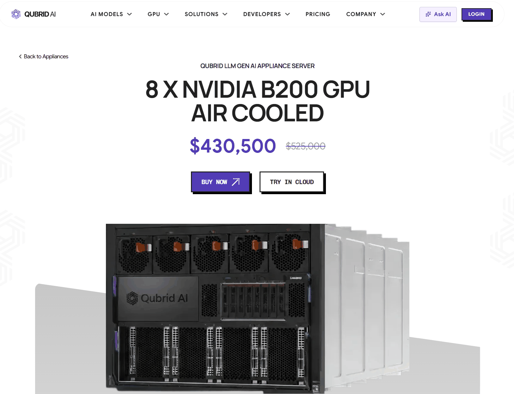
One 8×B200 server: $430,500 — the physical silicon.
In the AI era, the critical input isn’t crude oil — it’s specialized semiconductor hardware.
NVIDIA 80–90%
AMD 5–8%
Share of the global AI accelerator chip market
$130B+ in data-center revenue in 2025 alone. Rivals are left scrambling for single-digit share.
The question: why can’t a rival just engineer a faster chip and steal the market back?
The Razor and the Razor Blade
The chip is the razor. The software is the razor blade — and that’s where the lock-in lives.
Above the surface — the Razor
Physical silicon (H100 / Blackwell GPUs). Interchangeable, bound by physics — a rival can match it.
Below the surface — the Razor Blade
CUDA software platform — the proprietary translation layer between developer code and the physical math of the chip.
While rivals chased silicon physics, Nvidia made CUDA the definitive programming language of global deep-learning research and enterprise deployment.
The Architecture of Software Lock-In
AI Developer
CUDA ecosystemNvidia hardware stays locked in
Cheaper rival hardwareblocked by the switching cost
The switching cost: rewriting years of accumulated code, untangling massive software libraries, and retraining engineers on an entirely new programming interface.
Takeaway: a cheaper chip can’t win developers over — the labor cost and time delay of switching are catastrophic.
2 · Switching Costs & Network Effects
Switching cost — what you pay in money, time, or lost data to leave. Years of apps, an Apple Watch, iMessage, the blue bubble … ~58–60% of US users stay on iPhone, so Apple charges a 15–30% App Store cut.
Network effect — the product is worth more as more people use it. Consoles, social media, messaging → the market tips toward one platform, with no patent or grant required.
Network Good with Switching Costs
Your first console pulls in the next one.
Your first console → your friends on the same platform → your next console on the same platform.
Network good: a good whose value to each customer rises with the number of other people who use it.
Other examples: your first pharmacy, your first bank, your first credit card — each gets stickier as more people are on it.
Two-Sided Market with Switching Costs
An app store: two sides, one platform.
End users
App developers
App / game stores connect two sides — end users and developers — on one platform.
High switching costs make it hard to leave after you’ve bought apps — your library doesn’t come with you.
Contract Switching Costs
Switching costs occur when customers must give something up to switch to a competing product — here, a cash penalty for leaving early.
Carrier
Smartphone fee
Basic phone fee
AT&T
$325
$175
Sprint
$350
$200
Verizon
$350
$175
Early-termination fees (ETFs) for leaving a phone contract before it ends.
The fee depends on
your contract terms & proration
the time remaining
the device you bought
A deliberate barrier to leaving — even when a rival is cheaper.
iPhone and Its Ecosystem
Market power
Millennials are the largest share of US iPhone users; Gen Z 61% and teens 82% adoption.
Usage & spending
89 interactions/day, 5.6 hrs/day; ~$154/yr on apps & subscriptions.
Dominance
The iPhone holds over 58% of the US smartphone market — the deeper the ecosystem, the higher the switching cost.
The Engineered Moat — Ecosystem Lock-In
The most insidious modern moats are engineered: tech giants intentionally inflate switching costs so neither consumers nor developers ever leave.
Each layer Apple adds raises the cost of leaving:
The blue bubble — iMessage social capital
Seamless Mac & AirDrop integration
Years of historical app purchases
Accumulated health & device data
$161B
estimated global App Store revenue in 2025 — engineered friction trapping a captive base of ~1 billion people.
The Architecture of the Walled City
Path A — digital goods
In-app purchases & subscriptions → the 15–30% App Store tax.
Path B — physical services
Food delivery, rides → the 0% exemption. No cut taken.
Why let food trucks operate tax-free? The walls are made of code, not stone. Apple waives the tax on essential physical services — if people can’t eat or commute through the ecosystem, they’ll abandon it. The exemption is calculated ecosystem preservation.
Behavior, Not Just Size, Violates Antitrust Law
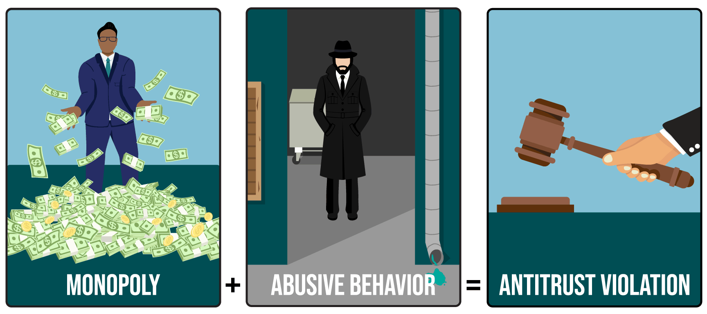
Having a monopoly is legal. It’s the abusive, exclusionary behavior — not the size — that breaks the law.
DOJ Sues Apple — Monopolizing Smartphone Markets
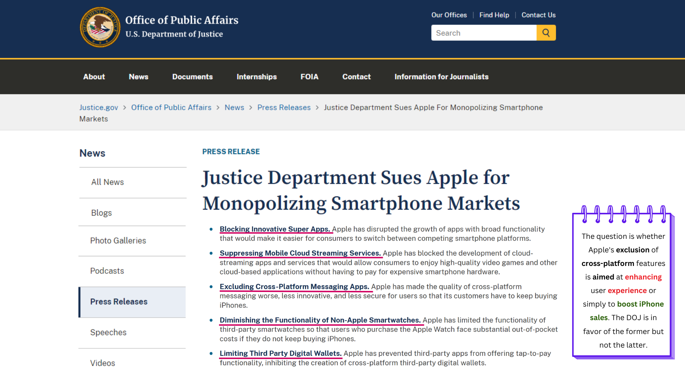
The DOJ’s 2024 case lists five exclusionary tactics — blocking super-apps, suppressing cloud gaming, degrading cross-platform messaging, hobbling non-Apple watches, and limiting third-party wallets.
The real question: is Apple’s exclusion of cross-platform features enhancing user experience, or just boosting iPhone sales? The DOJ argues the latter.
AirTags, Tile, and the Senate Hearing
Apple launched AirTags the same week a Senate antitrust hearing took up Tile — a third-party tracker Apple now competes against.
Tile testified Apple “unfairly limits competition.” The platform owner can quietly hobble rivals it also sells against — self-preferencing is the heart of the case.
“Buy Your Mum an iPhone”
Asked why videos from an Android relative look bad, Tim Cook’s answer: “Buy your mom an iPhone.” — lock-in: a genuinely better ecosystem, or engineered friction?
Barriers to Switch — the Walled Garden
“It’s fine to build a beautiful garden for users to enjoy — but a company should also leave a window to the outside world, because there may be a better view beyond the wall. If the firm keeps the door open, it will greatly increase consumer surplus.”
3 · Product Differentiation & Branding
Make the product feel unique — and competition softens into pricing power.
Tesla
Early self-driving lead + a proprietary Supercharger network legacy automakers couldn’t match.
Red Bull
Extreme-sports identity so strong rivals can’t enter — despite trivially low production cost.
Rolex · Mercedes
Decades of brand image → prices far above production cost, sustained by perception alone.
Apply Differentiation is the weakest barrier — it’s the whole story of Chapter 12 (monopolistic competition), where rivals can enter with their own twist. Here it’s one ingredient in a bigger moat.
Innovation → Product Differentiation
Tesla Autopilot — self-driving as the differentiator.
Tesla Autopilot: self-driving capability sets a new market standard rivals scramble to match.
Product differentiation: a genuinely unique product lets a firm command premium prices.
Result: higher profitability and a defended market position.
Marketing → Product Differentiation
Red Bull’s extreme-sports spectacles. (Click to play.)
Strong brand identity: Red Bull’s positioning makes it hard for rivals to enter — despite a near-zero production cost.
The entire price premium is brand, not the liquid in the can.
Example: Tesla Supercharger
The Supercharger network — three moats in one.
Control of a key input → prime charging locations.
Charging network → switching costs (leave Tesla, lose the network).
More chargers → lower ATC (economies of scale).
One product, three reinforcing moats at once — the sources of monopoly power rarely come alone.
4 · Economies of Scale & Natural Monopoly
Natural monopoly — one firm can supply the whole market at lower average cost than two could. Arises with very high fixed cost + very low marginal cost.
Electric grid. ~$21.9B/yr US fixed cost; the cost of one more kWh is tiny. Two competing grids = both charge more.
Starlink. ~$10B+ sunk, 8,300+ satellites, 10M+ subscribers (2026). One more subscriber ≈ the cost of mailing a dish. A rival must rebuild the whole constellation.
Example: Electricity Transmission
Generation → Transmission ($21.9B/yr) → Distribution — one company can wire all of Boston’s 279,495 homes.
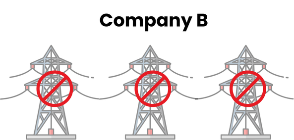
A second $21.9B grid would split the customers → both firms’ ATC rises. One firm is cheaper — a natural monopoly.
Natural Monopolies
A natural monopoly is an extreme economy of scale: LRATC declines continuously as output rises.
Efficient as one firm — cheapest for a single firm to make the whole industry output.
High fixed cost, low MC — the grid is huge to build, ~free to use.
Splitting raises cost — two firms each duplicate the fixed cost: ATC jumps $100 → $200.
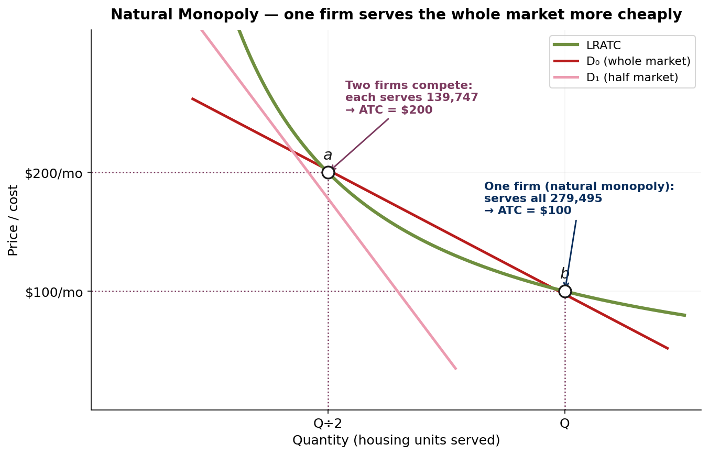
Case Study — SpaceX’s Starlink
Low-Earth-orbit internet — a 21st-century natural monopoly.
$10 Billion
The sunk cost — launching thousands of satellites + proprietary rockets.
10 Million
The scale — active subscribers by February 2026.
The Math of Zero Marginal Cost
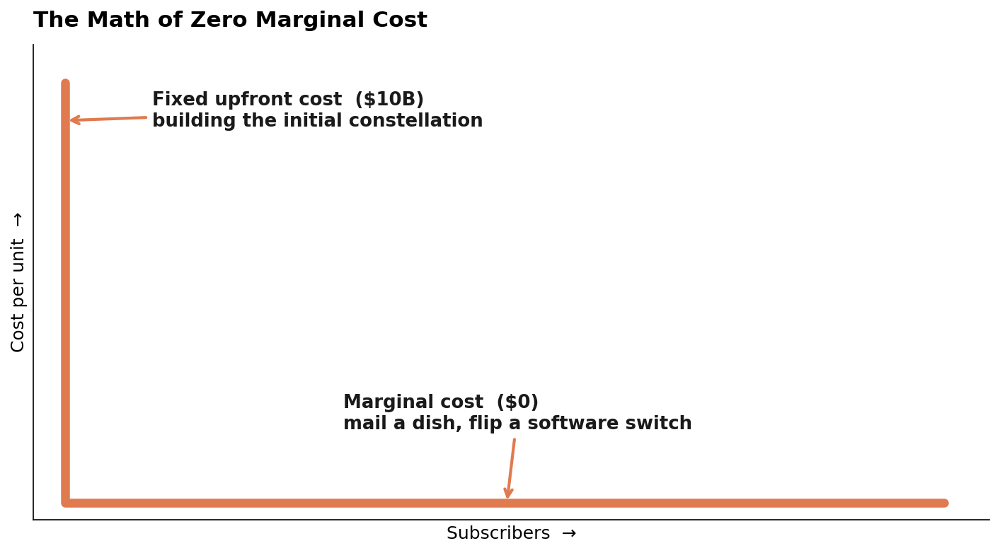
The competitor’s dilemma: a rival spends $10B to build a parallel constellation, then must split the global customers. Neither firm gets enough to cover its $10B debt — both go bankrupt.
The math dictates only one survives. That is a natural monopoly.
5 · Government-Created Monopoly
The state grants exclusivity: USPS first-class mail, water franchises, NYC taxi medallions (once >$1M before Uber).
Patents & copyrights are the big ones — a 20-year exclusive window to recoup R&D. Without them, rivals copy on day one and free-ride.
One drug, one patent — Ozempic / month
United States
$969
Germany
$59
India (no patent)
$14
Manufacturing cost
< $5
Same molecule, same factory — the price gap is entirely the patent. We’ll quantify it with the Lerner Index at the end.
Government Franchise — Water Companies
A municipal water-treatment plant.
Water companies are typically granted special government franchises by state or local governments.
One set of pipes per town — a natural monopoly the government licenses to a single provider.
Government Franchise — Postal Services
The USPS holds an exclusive franchise for delivering regular first-class mail to your mailbox.
That exclusivity contrasts with packages & expedited mail, where FedEx and UPS compete freely.
Government IP — Copyright
A copyright protects ideas — books, music, art, software code — so creators benefit from their work.
It lets Dan Harmon & Justin Roiland, creators of Rick & Morty, earn royalties on every episode (new or repeated).
Government IP — Patents
Patents give inventors of new products or processes legal protection for a limited period — usually 20 years.
Vital in pharma, tech, and auto manufacturing — the patent window is what makes huge R&D bets worth taking.
Beyond Patents — Trade Secrets
Coca-Cola’s formula — the classic trade secret.
A trade secret gives a competitive edge because the information isn’t publicly known — and it can outlast a 20-year patent.
Not registered with any government agency — protection relies entirely on keeping it confidential.
Licensing & Government Regulation
NYC taxi medallions — a license that capped the number of cabs.
Governments restrict entry through licenses — a NYC taxi medallion once cost over $1M before Uber broke the cap.
When the state grants a monopoly, it usually also regulates the price (utility commissions) — the trade-off for blocking competition.
Anatomy of a Digital Monopoly
Google, Apple, Amazon, Nvidia rest on three interlocking pillars:
1. Algorithmic market-making — set dynamic prices & shape demand in real time.
3. Economies of scale — turn huge fixed capital into zero-marginal-cost expansion.
When all three reinforce each other, the moat looks permanent. Whether it really is — that’s §11.5. Two or three firms inside the moat → oligopoly (Ch 13); many with differentiated products → monopolistic competition (Ch 12).
The Anatomy of a Digital Monopoly
The strongest modern moats combine all three pillars at once:
1. Algorithmic market-making — set prices, shape demand.
Cut the fare and more seats sell — but the airline earns $36 less on every seat it could have sold dear. That tug-of-war (next slide) is why MR < P.
The Monopolist Faces the Whole Demand Curve
To sell one more unit, it must cut the price — on every unit. That splits each new sale into two opposing forces:
Quantity effect (+) — revenue from the new unit sold.
Price effect (−) — revenue lost on all the units that used to sell at the higher price.
The price effect always drags revenue down, so MR < P at every quantity. The MR curve lies below demand, with twice the slope.
A Worked Example — the Monopoly Airline
One remote island, one runway, one airline. FC = $2,000 (sunk plane & gate), MC = $56/passenger. To sell more seats it must drop the fare for all.
Q
P
TR
TC
ATC
MR
MC
Profit
10
$344
$3,440
$2,560
$256
—
$56
$880
30
$272
$8,160
$3,680
$123
$200
$56
$4,480
40
$236
$9,440
$4,240
$106
$128
$56
$5,200
50
$200
$10,000
$4,800
$96
$56
$56
$5,200
60
$164
$9,840
$5,360
$89
−$16
$56
$4,480
90
$56
$5,040
$7,040
$78
−$232
$56
−$2,000
Profit peaks at Q = 50, where MR = MC = $56. Read the price up on demand: P = $200. Profit = (P − ATC) × Q = ($200 − $96) × 50 = $5,200.
Seeing It on the Graph — MR Below Price
Demand slopes down. The MR ledger (orange) falls twice as fast — and lands far below price.
At Q* = 50, the running MR crosses MC = $56 (gold star). But the price is read off demand: P* = $200.
The gap is the point: P = $200 while MR = $56. Never read price off the MR curve.
The Five-Step Method — Any Monopoly Problem
Find the quantity where MR = MC.
Read Q* off the horizontal axis.
Read P* up on the demand curve (not MR!).
Find ATC at Q*.
Profit = (P* − ATC) × Q* — the rectangle.
Smooth curves land at Q* ≈ 45, P* = $218; the table’s 10-seat batches round to Q = 50, P = $200. Same logic.
Common Misconception
“A monopolist charges the highest possible price.”
It could charge $344 — but then it sells only 10 seats and earns just $1,440. The profit-maximizing price is $200, well below the top of the demand schedule.
A monopolist doesn’t charge as much as possible — it charges where MR = MC, which pins it to one specific point on the demand curve. Higher price ⇒ too few buyers; lower price ⇒ margin too thin.
Interactive — The Monopoly Airline (Figure 11.1)
Drag Q: price falls along demand, and because every seat must be cut to the same price, MR < P. Profit peaks where the running MR meets MC = $56 — at Q* = 45, P* = $218.
Monopoly Is Not a Guarantee of Profit
If demand sits entirely below ATC, the monopolist still produces at MR = MC — but the price it reads off demand is below ATC. It loses money.
Short run: keep operating if P > AVC. Long run: exit — exactly like a competitive firm.
Monopoly gives the power to restrict output and raise price. It does not give the power to create demand that isn’t there. Being the sole seller of something nobody wants is not profitable.
Also a myth: “Monopoly is illegal.” Having one is legal. Abusing anticompetitive tactics to get or keep one is not — that’s §11.5.
Same plane, same cost curves — only demand moved. With fewer flyers the fixed cost spreads over fewer seats, so ATC rises and price slips below it. Being the only seller guarantees neither profit nor loss.
Example — A Monopoly That Went Broke
Motorola’s Iridium “Satellite Series” — the $3,000 handset (1999)
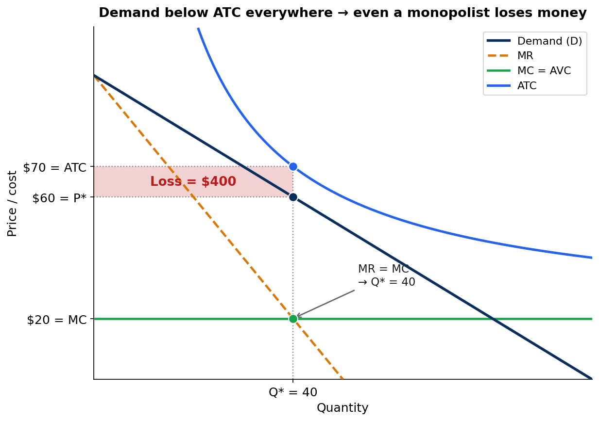
Iridium (1998): Motorola built the only global satellite-phone network — a textbook monopoly — for ~$5 billion.
A $3,000 brick-sized handset, calls up to $7/minute. Almost no one bought — ~50,000 subscribers, not the millions it needed. Bankrupt in 9 months.
Sole seller, zero rivals — and it still lost money. Demand sat below ATC, so even MR = MC pricing couldn’t cover cost.
Poll — Should the Airline Sell More Seats?
At Q = 50 the airline could expand to Q = 60. The demand price there is $164, but the MR of those 10 seats is −$16, while MC = $56. Should it sell them?
A. Yes — P = $164 is well above MC = $56, so each seat is profitable
B. No — MR = −$16 is below MC = $56, so the extra seats destroy profit
C. Yes — filling more seats always raises total revenue
D. Only if it first finds a way to lower MC
Click your answer. Press ↓ for results.
Poll Results
Answer: B. A monopolist expands only while MR > MC. Here MR = −$16 < MC = $56, so those seats lose money — total revenue actually falls from $10,000 to $9,840.
A is the classic trap: it compares the demand price ($164) to MC, ignoring the price cut on the first 50 seats. Decision rule is always MR vs MC.
Section 3 · LO 11.3
The Welfare Cost of Monopoly
Less output, higher price — and a triangle nobody gets to keep
Monopoly Breaks the First Welfare Theorem
Chapter 10: perfect competition sets P = MC, output at the efficient level, total surplus maximized — the First Welfare Theorem (Ch 6).
A monopolist produces less and charges more. The lost value of trades that would have helped both sides — but never happen — is the deadweight loss of monopoly.
P > MC means the last buyer values the good above its cost — yet the sale is blocked.
Higher Prices and Lower Output
Under monopoly, the price will be higher and output will be lower than under competition.
This creates inefficiency in the market known as deadweight loss.
MONOPOLY MARKET
$200
One seller · fewer seats · high fare
VS
COMPETITIVE MARKET
$56
Many sellers · many seats · low fare
Same planes, same costs: competition would fly 90 seats at $56; the monopolist restricts to 50 at $200. The 40 trips that never happen are the deadweight loss.
Consumer Surplus, the Transfer, and the Lost Triangle
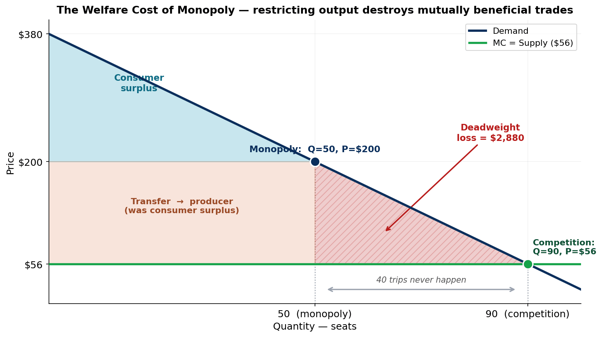
Competition would give Q = 90 at P = $56. Monopoly gives Q = 50 at P = $200.
Transfer (orange): $144/ticket moves from consumers to the firm. A wash for society.
Deadweight loss (red): 40 trips worth more than $56 never happen. ½ × 40 × $144 = $2,880 — pure loss, nobody’s gain.
The Societal Tax: A 30% Price Floor
Apple extends its monopoly from the iPhone into the App Store — the only channel to reach an iPhone user. Its marginal cost to host one more app is fractions of a cent, yet it takes a 30% cut of every sale.
A 30% artificial price floor. The cut acts like a tax that raises every developer’s average variable cost. On thin margins, surrendering 30% of gross revenue makes the app unviable — so it never launches.
Consumers would value those apps above the cost to make them but below the post-cut price — so the transaction never happens. The software never built, the utility never felt, is the deadweight loss.
This deadweight loss is invisible — you only see it in what’s absent: each dashed outline is the app, the startup, that never launched.
Rent-Seeking — Spending to Stay on Top
Rent-seeking — using real resources (lobbying, litigation, political influence) to capture wealth without creating any new wealth.
Because monopoly profits are huge, firms spend real money to defend them — money that builds nothing.
~$70M
Top-5 US tech firms’ 2025 federal lobbying — Meta, Amazon, Microsoft, Google, Apple
€151M
EU digital-industry lobbying, 2025 (+33% vs 2023) — much aimed at softening the Digital Markets Act
Meta alone kept ~87 lobbyists in Washington — about one for every six members of Congress. Pure economic waste.
Rent-Seeking Behavior
Because monopolists earn economic profit, they have a strong incentive to protect that position from potential competition.
Rent-seeking = behavior directed toward avoiding competition — spending real resources to capture wealth without creating any.
“Bill: No more airport.”
An incumbent lobbies to block a new airport — and the rival airlines it would bring. Resources spent fighting competition, not serving flyers.
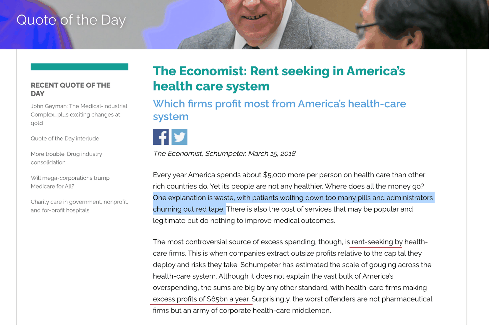
The Economist (2018): U.S. health-care firms extract ~$65bn/year in rent-seeking excess profit.
The Protection Apparatus
Where the rent-seeking dollars actually go — and where they don’t.
R&D / Innovation
where it could have gone
$70M
2025 federal lobbying by Meta, Amazon, Microsoft, Google & Apple
Legal & Political Fortress
Meta keeps 87 lobbyists in D.C. — 1 for every 6 in Congress.
These millions produce no tangible goods — no better battery life, no smarter algorithms. They are pure societal waste dedicated to fortifying existing market power.
X-Inefficiency — No Pressure to Be Sharp
X-inefficiency — operating above minimum cost because no competitor forces you to be efficient.
Competition is a discipline. Remove it, and the firm drifts off its own cost curve — into overstaffing, bloat, and slack a rival would never allow.
Three faces of it — press ↓: a privatized airline, a postal monopoly, and a CEO’s $6,000 shower curtain.
X-Inefficiency in the Wild
British Airways — state-owned in the 1970s, it faced little competition, leading to overstaffing and bureaucratic inefficiencies and high operating costs. After privatization, productivity and cost efficiency improved.
USPS — its monopoly on first-class mail removes competition there, reducing incentives to cut costs or innovate → bureaucratic delays, high labor costs, and management slack.
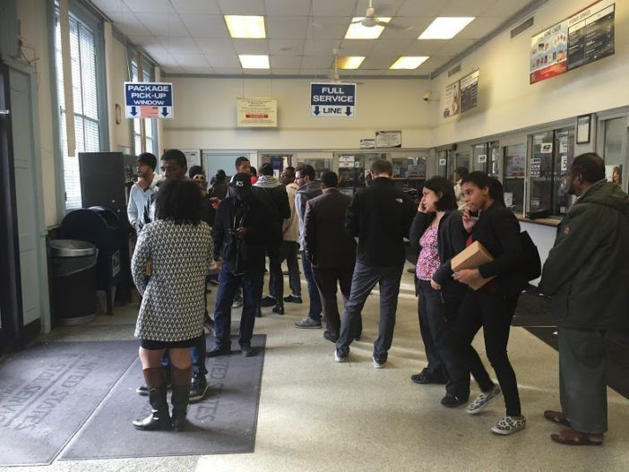
X-Inefficiency — Slack at the Top
Dennis Kozlowski, former CEO of Tyco International, spent $2 million on a lavish birthday party for his wife — and bought personal extravagances like a $6,000 shower curtain.
With no competitor forcing discipline, slack and excess go unchecked — corporate resources burned on what creates no value.
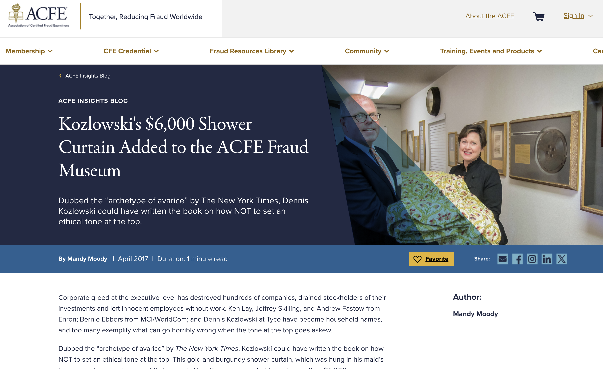
The curtain now sits in the ACFE Fraud Museum.
The Innovation Defense — the Societal Ledger
Weigh monopoly’s costs against its justifications — the great open debate.
The Costs — Market Failures
Wealth transfer — charging $28k for a $3.3k chip.
Deadweight loss — the graveyard of un-built apps and un-made trades.
Resource waste — bloated management + $70M on defensive lobbying.
The Justifications — Market Fuel
Capital magnet — attracts the billions for high-risk infrastructure (Starlink’s $10B).
R&D subsidization — funds the 2.4×/yr growth in frontier AI (a ~$1B run).
Paradigm shifts — pushes past physical limits (thousands of satellites into orbit).
Evaluate DWL is a cost today; the innovation it funds is a benefit tomorrow. Which wins? The exact tension behind drug patents (Ch 16). Press ↓ for the upside in detail.
Monopolies and the Incentive for Innovation
Potential benefit of monopolies: the prospect of monopoly profit — protected by patents & copyrights — can incentivize firms to invest in research & development,
leading to new products and technologies a zero-profit competitive firm could never fund.
Perfect Competition → A Local Monopoly
50 near-identical pizza shops in a three-mile radius — until one differentiates.
Innovation & differentiation are how a firm escapes the zero-profit crowd and carves out market power — the prize that motivates the effort.
Economies of Scale — Universal Service
Often criticized for inefficiency — yet one scaled network does what a fragmented market won’t: reach everyone.
The USPS will carry a letter to any address — Hawaii, Alaska, Guam, even a carrier at sea — for the price of a single stamp.
Think Like an Economist
Economists measure the deadweight loss inside the market the monopolist controls.
But is there also a welfare gain from the innovations those profits funded? How would you decide whether the gain outweighs the loss?
Argue both sides — 2 minutes.
2 min
Section 4 · LO 11.4
Price Discrimination
What if the firm could charge each customer a different price?
Same Coffee, Two Prices — Third-Degree by Location
Charging Different Prices for the Same Thing
Price discrimination — charging different prices to different consumers for the same good, not justified by cost differences.
It needs three conditions:
1. Market power — a downward-sloping demand curve.
2. Identify or sort consumers into groups by willingness to pay.
3. Prevent arbitrage — stop resale between groups.
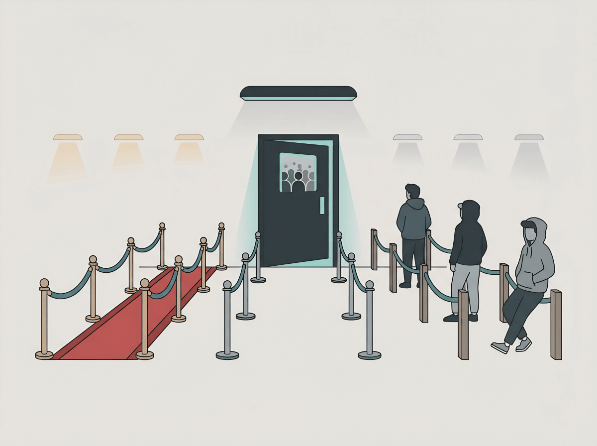
The Three Degrees of (Algorithmic) Price Discrimination
1st Degree
Perfect extract. An algorithm mines vast market data for moments of inelastic demand and charges each buyer their maximum willingness to pay.
Self-sorting. Consumers voluntarily pick the tier that matches their wallet — price set by product version.
Netflix — ad-supported vs. 4K-premium subscriptions.
3rd Degree
Group profiling. Isolating distinct demographic groups by engagement patterns, then pricing each differently.
TikTok Shop — targeting Gen Z.
The classic 1st / 2nd / 3rd-degree taxonomy — now executed by algorithms at scale. We’ll take each in turn.
First-Degree — Each Buyer’s Exact Willingness to Pay
The firm captures every dollar of consumer surplus. Nearly impossible — but the data economy is closing the gap.
Amazon, 2000. Caught charging different DVD prices by browsing history. Backlash was instant; Bezos called it a “random discount” and refunded. Lesson: overt personalized pricing enrages people.
Delta, 2025. AI-driven personalized fares with startup Fetcherr — from 1% of domestic seats toward 20% by year-end. An algorithm that may know your willingness to pay better than you do.
Framing: a “coupon for you” feels like a gift; a “surcharge for you” feels like theft — though the economics is identical. Firms learned to frame PD as discounts for some, never surcharges for others. (More in Ch 18.)
First-Degree in Action — the Silver-Coin Auction
With more coins to sell, the seller can message the 5 losing bidders and charge each the maximum price they were willing to pay — exactly what an online auction reveals.
Press → — each bid (right) maps to one slice of producer surplus (left).
Click to enlarge
Efficient — but All Surplus Goes to the Seller
A perfectly price-discriminating monopolist is as efficient as a competitive firm — it produces the same quantity (Qc), so the deadweight loss disappears.
But total surplus improves at a price: all consumer surplus is transferred to producer surplus. The firm keeps every gain from trade.
First-Degree in the Wild — the Car Lot
The car dealership is everyday first-degree PD: the salesperson sizes up each buyer — budget, urgency, trade-in — and negotiates toward your personal maximum.
No two buyers on the lot pay the same price for the same car.
Car Dealerships — Three Buyers, Private Values
Private Information WTP=$12,000
Private Information WTP=$20,000
Private Information WTP=$25,000
Traditional Monopoly: Price = $25,000
PM = $25,000 QM = 1 MC = $12,000 Profit = $13,000
Private Information WTP=$12,000
✗
Private Information WTP=$20,000
✗
Private Information WTP=$25,000
✓
Traditional Monopoly: Price = $20,000
PM = $20,000 QM = 2 MC = $12,000 Profit = $16,000
Private Information WTP=$12,000
✗
Private Information WTP=$20,000
✓
Private Information WTP=$25,000
✓
Price Discrimination — Charge Each Buyer Their WTP
Could a seller read each shopper’s willingness to pay online — and quietly charge each a different price? In September 2000, Amazon tried.
Shoppers who deleted their cookies (so Amazon no longer recognized them as regulars) saw lower prices. One customer watched a DVD fall from $26.24 → $22.74.
That’s textbook first-degree PD: a personalized price aimed at each buyer’s own WTP.
The Aftermath
The backlash was immediate — customers felt cheated, and the story made national news.
“We have never tested and we never will test prices based on customer demographics.”
— Jeff Bezos, 2000
Amazon called it “random” testing and refunded shoppers who paid more. The lesson: open first-degree PD on identifiable customers is a PR & legal landmine.
Amazon’s Strategy Today
After the backlash, Amazon and most e-tailers avoid true first-degree PD. Two tools do the work instead:
1. Dynamic pricing(looks second-degree) — the price moves for everyone with demand, rivals, time of day, and inventory. Not personalized — just a hyper-fast algorithm.
2. Personalized marketing — your history triggers a coupon or recommendation aimed at you. Same effect as a personal price — but framed as a discount for you, never a surcharge.
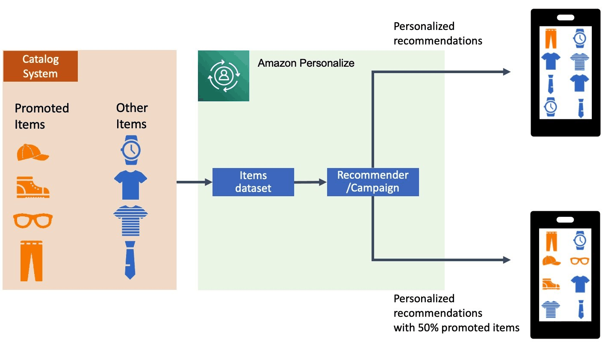
Amazon Personalize — your data drives what you see (and the deal you get)
In-Store: Third-Degree That Edges Toward First
Grouping (third-degree): charge identifiable groups different prices.
Prime members get the discount; non-Prime pay the listed price.
Targeting → a “group of one”: merge your online data (browsing, Prime Video, income proxies) with your offline grocery data.
Amazon learns where you’re inelastic (brand-name detergent at full price) vs elastic (organic chicken only on sale).
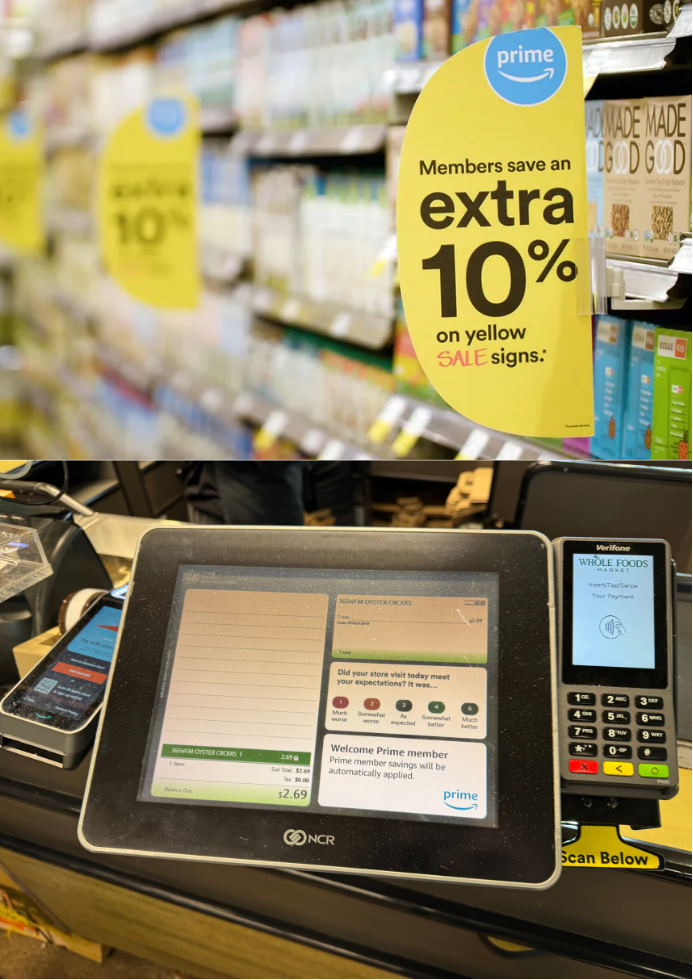
The Payoff — Personalized Coupons
Amazon won’t change the register price by shopper (the 2000 lesson). It uses your data for behavior-based third-degree PD later:
Inelastic you — no coupon for the brand-name detergent you always buy. Why discount what you’ll pay full price for?
Elastic you — a targeted “20% off organic chicken” lands in your app, timed to your next trip.
Personalized coupons ≈ personalized prices — quietly approaching first-degree, capturing your surplus over time.
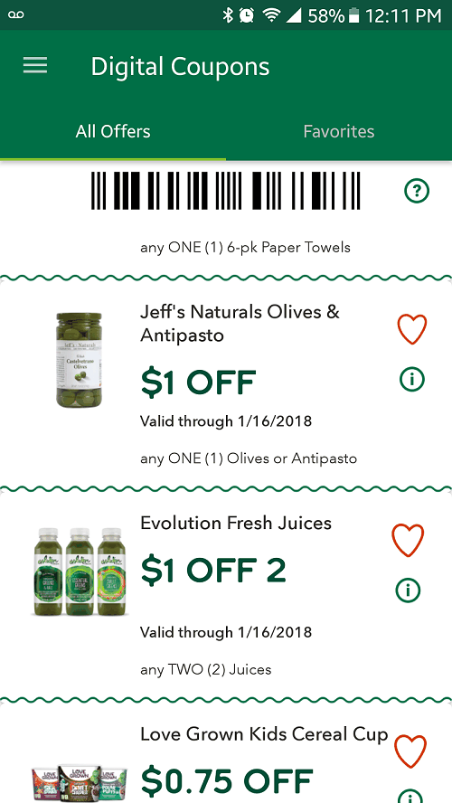
The Frontier — It’s Already Being Built
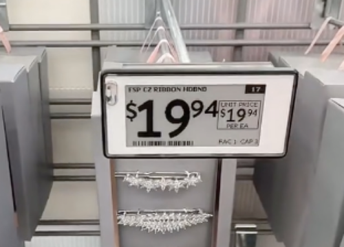
Electronic shelf labels. Walmart is installing digital price tags that update in seconds from the back office — the infrastructure for dynamic (even personalized) pricing.
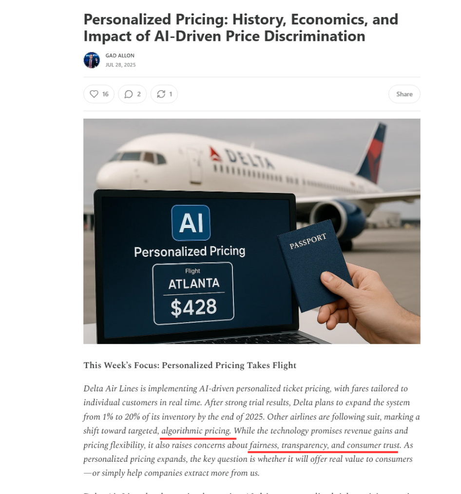
AI airfare. Delta plans AI-set, individualized fares on a growing share of routes — a price tuned to you, edging toward first-degree.
Digital tags + AI + your data = the machinery to charge each buyer a personal price. The economics is old (first-degree PD) — only the technology is new.
Second-Degree — Build a Menu, Let Buyers Sort Themselves
The firm can’t tell who you are — so it designs options and lets you reveal your type by choosing.
Quantity discounts. Costco 50-bag box at $0.45/bag vs $0.50 at the corner store.
Versioning. Tesla Model Y: $39,990 → $57,490, same shell, software-gated tiers.
Two-part tariffs. Gym: $300/yr + $10/class. Buffet: $20 in, $0/plate.
Bundling. $15 CD (12 songs) → iTunes $0.99 unbundled → Spotify re-bundles 100M songs at $10.99.
Netflix tiers: $6.99 ad-supported vs $22.99 premium — a $16 gap for the same library. Cinephiles self-select up; budget households (higher elasticity, Ch 5) self-select into ads. ~70M ad-tier users by 2025.
Quantity Discounts — Buy in Bulk, Pay Less per Unit
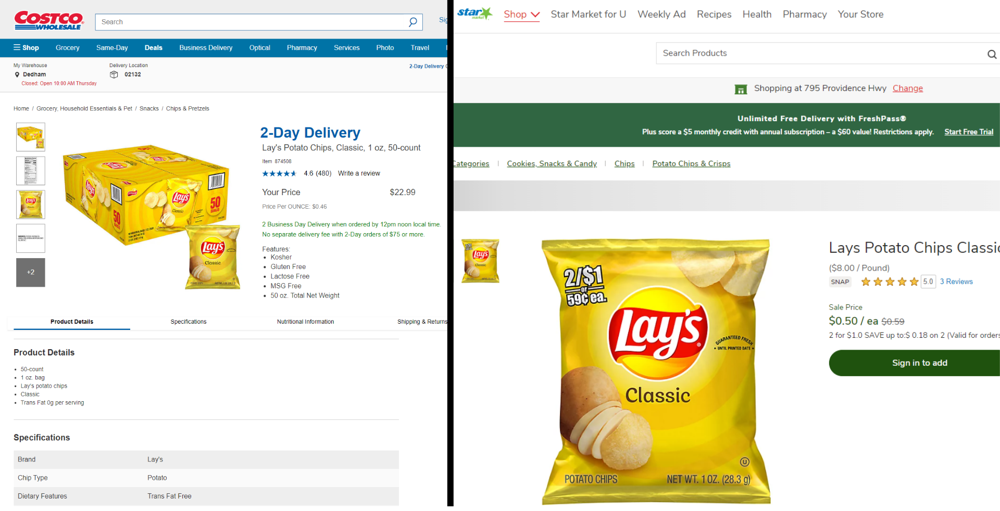
Costco (50-pack): $22.99 ÷ 50 = $0.45 / bag
Star Market (single):$0.50 / bag
Buying in bulk → a lower cost per unit. The big-box buyer reveals low per-unit WTP; the convenience buyer pays more. Pricing by quantity is second-degree PD.
Bundling — the CD-Era “Forced Bundle”
The album bundles 1 hit with 11 filler tracks into one $15 product. Want just the hit? You still buy all 12.
How the bundle captures consumer surplus:
A fan who loves all 12 songs would gladly pay $15 — nothing extra captured.
A casual listener who wants only the hit also pays $15 — the firm captures the surplus she'd have kept if she could buy one song.
In the 1990s the marginal cost of pressing & shipping a CD was high — selling single songs wasn't worth it, so the bundle was the product.
Tech Unbundles — iTunes à la Carte
The MP3 pushed the marginal cost of one more song to ≈ $0. iTunes (2003) sold songs individually at $0.99.
Consumer surplus ↑: the one-song buyer pays $0.99, not $15.
Producer revenue ↓: buyers who'd have paid $15 now grab just their 3 favorites = $2.97.
Unbundling handed surplus back to consumers — and collapsed total industry revenue.
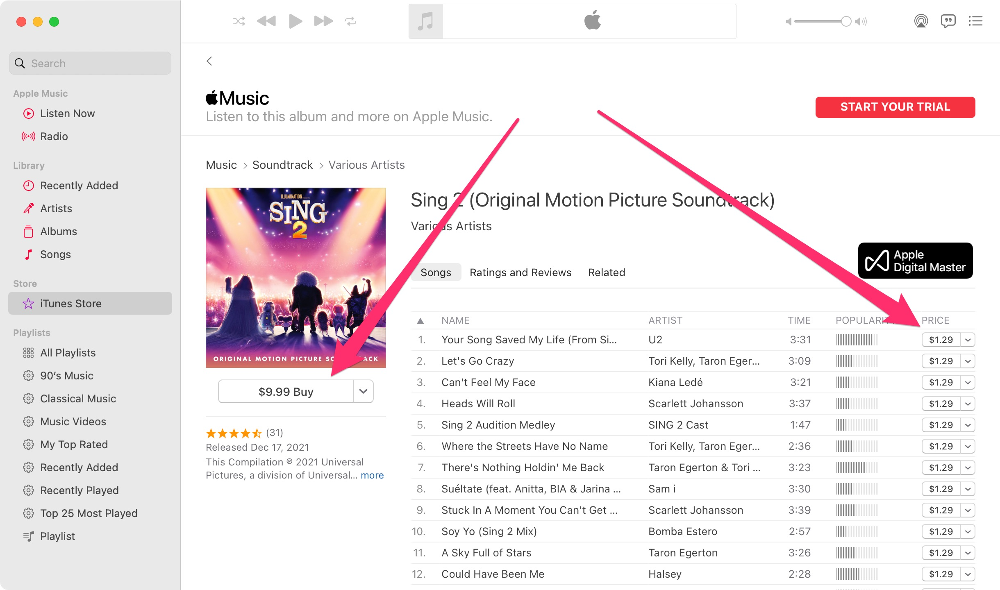
The “All-You-Can-Eat” Bundle — Spotify
A subscription is a new kind of bundle: instead of 12 songs, Spotify bundles all 100M songs for one flat monthly price.
Self-selection (versioning):
Low-WTP / price-sensitive → the free, ad-supported tier.
High-WTP → Premium ($10.99/mo) — ad-free, offline, any order.
It re-bundles the unbundled customer — a stable, high-value revenue stream from the highest-WTP listeners.
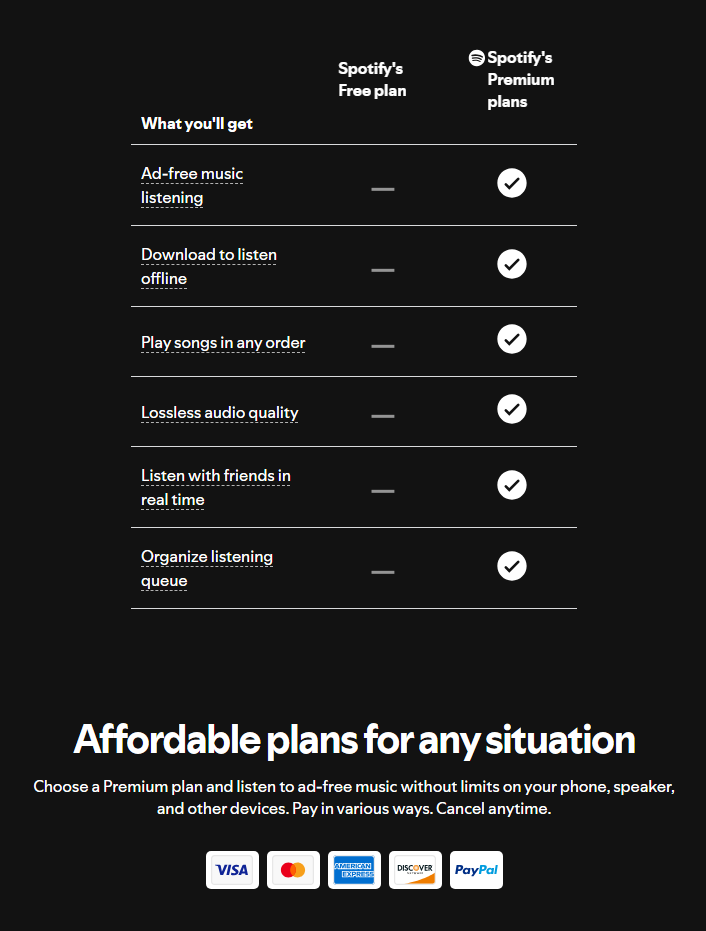
Versioning — Buyers Self-Select
Offer a menu of versions and let each buyer voluntarily pick the one best for them — revealing their type. The firm prices by the version chosen, not by who you are. To make buyers split, firms widen the gap between tiers — sometimes intentionally limiting the cheaper one (the “damaged-goods” idea: stripped Basic Economy, a deliberately crippled chip).
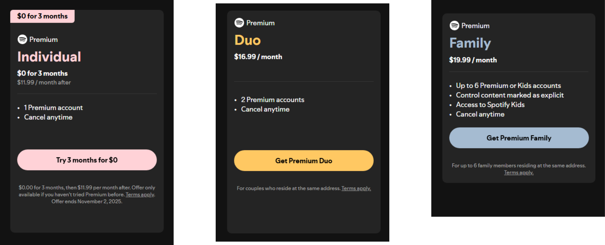
Spotify is textbook versioning:Individual ($11.99), Duo ($16.99 / 2 accounts), Family ($19.99 / up to 6 accounts). Households self-select by size, and the cheaper tiers are deliberately capped (one account, same-address rules) so higher-value households pay more.
The “Stripped” Economy — Damaged Goods
The flip side of versioning: a firm will deliberately make the cheap version worse — spending nothing, or even money, to degrade it — so high-WTP buyers refuse to trade down and pay for the premium tier.
Then. 1840s railways ran roofless third-class cars. Dupuit (1849): they did it “not to hurt the poor, but to frighten the rich” into buying first class.
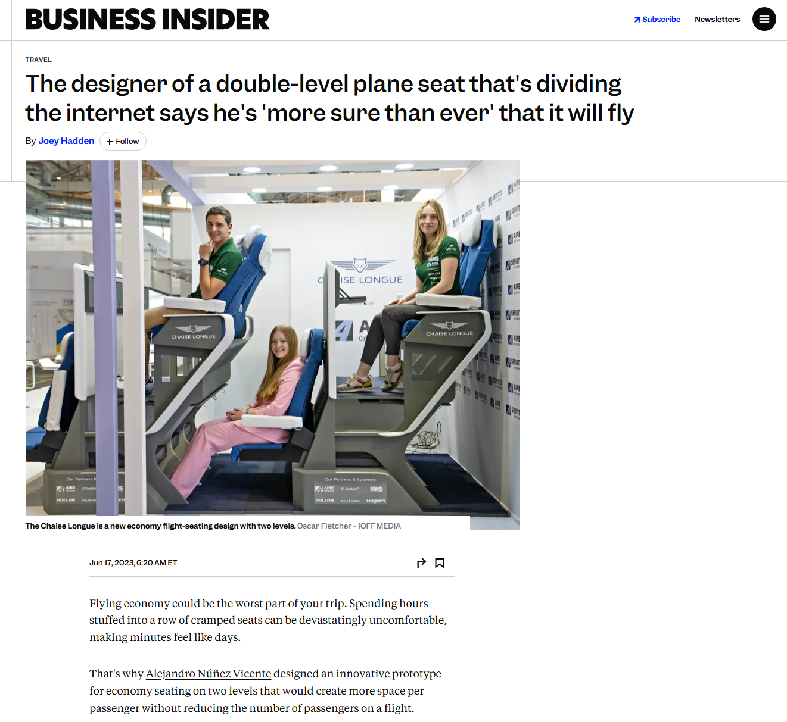
Now. Ever-tighter “stripped” economy seats (and Basic Economy) keep the cheap tier just painful enough to upsell.
Self-Sorting Captures the Entire Demand Curve
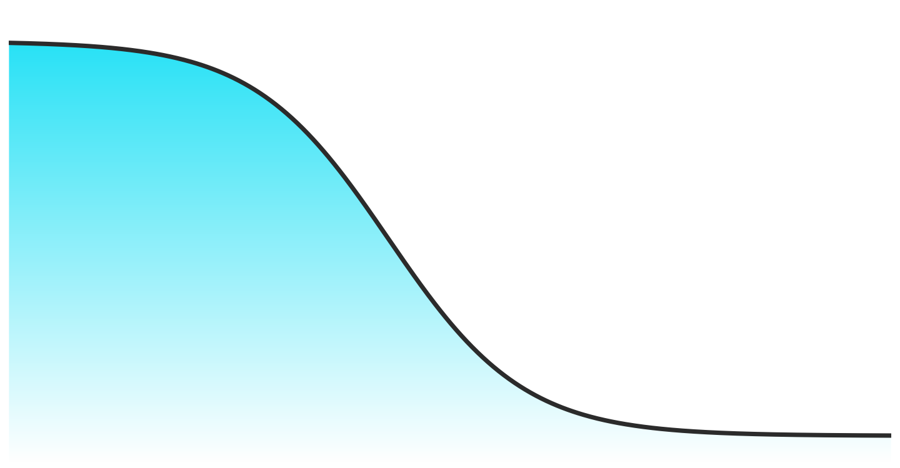
Highly price-inelastic. Cinephiles & high-income households want 4K HDR — they pay $22.99+/mo and refuse to watch ads.
Highly price-elastic. Budget households & students — captured by the $6.99 ad-supported tier (~70M monthly active users by 2024).
To fund $17B+/yr of content like Stranger Things, Netflix uses the identical core product to monetize the bottom of the curve without sacrificing the margins at the top.
Product Versioning — Tesla Model Y
One car, four software- and hardware-gated versions. Buyers self-select from $39,990 to $57,490 — same shell, very different price.
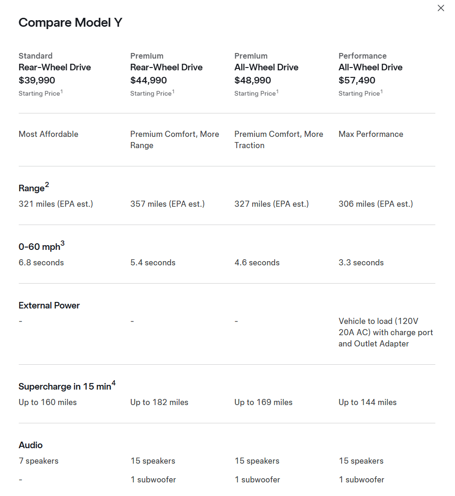
Two-Part Tariffs — the Gym
Part 1: Membership = $300 / year
Part 2: each class = MC = $10 / class
The annual fee captures consumer surplus up front; the per-class price = marginal cost, so members keep using the gym efficiently instead of being priced out.
Two-Part Tariffs — the Buffet
Part 1: entry = $30 / person
Part 2: each plate = MC = $0 / plate
Once the trays are cooked, unsold food is thrown out anyway — so the marginal cost of one more plate ≈ $0. The buffet charges $0 per plate and captures all the surplus in the entry fee.
Two-Part Tariffs — the Local Car Wash
Wages and rent are already paid to open the doors — so the marginal cost of one more wash ≈ $0. The unlimited monthly fee captures the surplus; the per-wash price ≈ $0.
Third-Degree — Different Price to an Observable Group
Spotify. $11.99 Individual vs $5.99 Student. Students have higher elasticity; a .edu check prevents arbitrage. Charge them full price and you lose them entirely.
Airlines. Business travelers (last-minute, inelastic) pay premium fares; leisure travelers (flexible, elastic) pay discounts. The ticket is non-transferable — arbitrage blocked.
The logic is always elasticity: charge the inelastic group more, the elastic group less. Segment by an observable trait — age, student status, location, timing — and stop resale.
Key contrast with second-degree: here the seller observes your group and assigns the price; there, you pick from a menu.
Third-Degree — the Student Discount
Definition. Pricing is differentiated for different consumer groups based on an observable characteristic (a proxy for their elasticity) — e.g. the Student Discount.
Third-Degree — Student Platforms (UNiDAYS)
Platforms like UNiDAYS gate deals (HP, Microsoft 365) behind a verified student ID. The long-run twist: once students learn these tools, they keep using them at work — becoming more inelastic later, when they'll pay full price.
Third-Degree — Movie Tickets (by Age)
Movie theaters charge different ticket prices for children, adults, and seniors — age is the observable trait, and the ticket is checked at the door (no resale).
Third-Degree — Airline Fares
Airlines charge varying fares to leisure (elastic) vs business (inelastic) travelers.
Prices rise as the departure date nears (late buyers = business).
Lower fares on non-peak days & with advance booking (leisure).
The ticket must be used by the purchaser — arbitrage blocked.
Isolating Impulsive Buyers — Without Cutting Margins
Gen Z User (Impulsive)
TikTok's algorithm tracks watch-time to the millisecond and fires highly targeted flash coupons to trigger impulse buys.
30% Flash Discount
↙
Older Demographic (Direct Search)
Older buyers viewing the exact same product see no discount.
This isolation generated $65B in GMV for TikTok Shop in 2025. Sellers optimize revenue by never running site-wide discounts that would erode profit from buyers already willing to pay full price.
Data Snapshot — FTC Surveillance Pricing
The FTC’s 2024–25 6(b) study found 250+ businesses using browser cookies, device data, and precise location to generate individualized prices.
Some tracked your cursor: drift toward the close button → a discount pop-up fires instantly.
Pharmacies excluded loyal customers from promos (inelastic) while targeting codes at infrequent buyers (at risk of leaving).
Source: FTC Surveillance Pricing 6(b) Study, January 2025 · ftc.gov/surveillance-pricing
Poll — Classify the Price Discrimination
Spotify charges $11.99 for Individual and $5.99 for a verified Student plan. This is…
A. First-degree — each person’s exact willingness to pay
B. Second-degree — a menu the buyer self-selects from
C. Third-degree — a different price to an observable group
D. Not price discrimination — it reflects a cost difference
Click your answer. Press ↓ for results.
Poll Results
Answer: C. Third-degree — Spotify segments by a verifiable, observable trait (student status) and charges the more elastic group less. The .edu verification is exactly the “prevent arbitrage” condition.
B is the common miss — reserve second-degree for when buyers pick from a menu (Netflix tiers, bulk discounts). Here the seller assigns the price by group.
Think Like an Economist
It’s 2:00 AM. You’re stranded in an unfamiliar neighborhood. Your smartwatch shows an elevated heart rate. Your phone reads 2% battery.
In that exact moment, what is your elasticity of demand for a ride? What stops the algorithm from charging you triple?
Discuss — 2 minutes.
2 min
Think Like an Economist
The same grocery chain (Star Market) runs a bright, fully-stocked store in wealthy Dedham (median income ≈ $119k) — and a sparse, bare-bones store in lower-income Dorchester (≈ $39k).
Is offering a worse product in the poorer neighborhood price discrimination, a rational response to demand, or both? And who bears the hidden cost?
Discuss — 2 minutes, then watch the two stores ↓
2 min
Public Policy
Regulation of Natural Monopolies
Goal: low price + low cost
Regulating the Natural Monopolist
Natural monopolies have economies of scale so large that one firm serves the whole market at lower cost than several could. You can’t just “add competition” — so policy must pick how to regulate:
1
Public ownership — the government owns and operates the monopoly. (e.g., municipal water)
2
Regulated private ownership — a private firm operates under government price & quantity limits. (e.g., the electric utility)
3
Franchise the right to operate — award the market to the firm offering the most competitive price and output.
Whichever path, the regulator’s real lever is the price it lets the monopolist charge — so the next question is: which price?
Regulating the Natural Monopolist
Average-Cost Pricing Rule
Require the monopolist to set price = average total cost (PR = ATC, at point b).
The firm earns a normal profit, but price is higher and output lower than under marginal-cost pricing.
Regulation in Practice
Often rate-of-return regulation (prices that ensure a normal return on investment),
or price caps PR (maximum price limits).
Estimating demand and cost curves accurately is challenging.
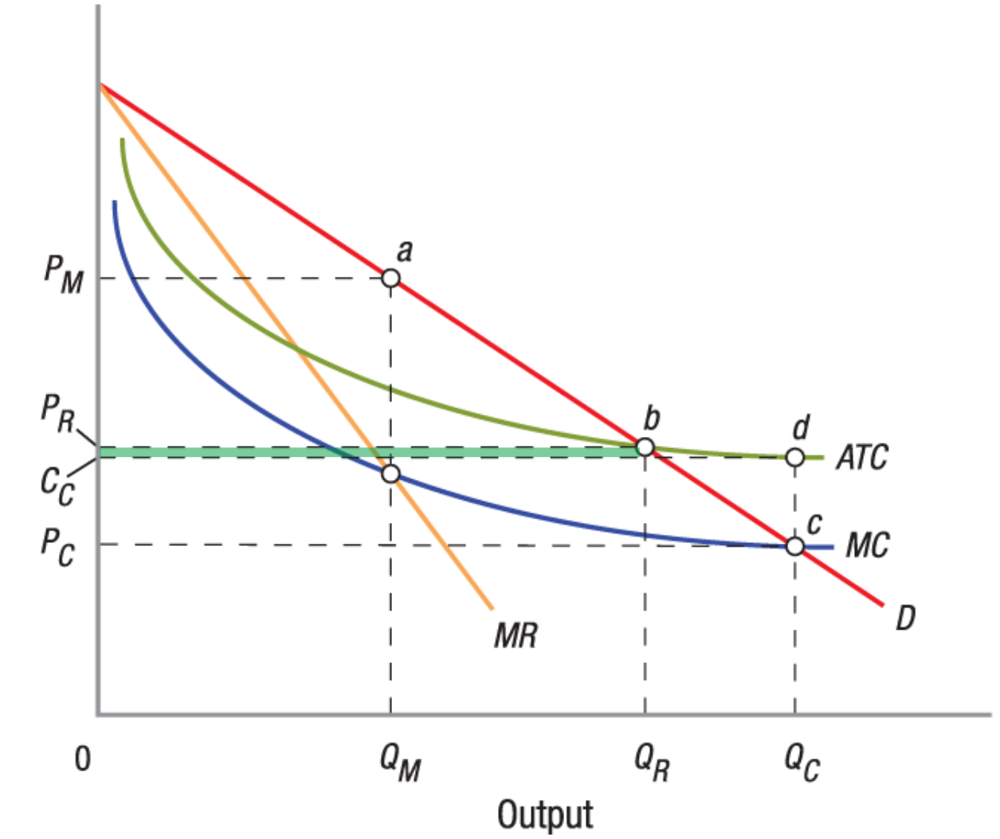
Regulating the Natural Monopolist
Marginal-Cost Pricing Rule:set price = marginal cost (PC = MC, at point c) — socially optimal, but if price < ATC the firm runs a loss, so a government subsidy may be needed.
Amtrak is the textbook case: it runs persistent operating losses and depends on federal subsidies — price-near-MC made real.
Section 5 · LO 11.5
Antitrust & Measuring Market Power
The law targets the abuse of power — not the power itself
Three Statutes Behind US Antitrust
Sherman Act (1890). Makes “restraint of trade” and “monopolization” illegal felonies.
Clayton Act (1914). Targets actions — especially mergers — that may “substantially lessen competition.”
FTC Act (1914). Bans “unfair methods of competition” and “deceptive acts.”
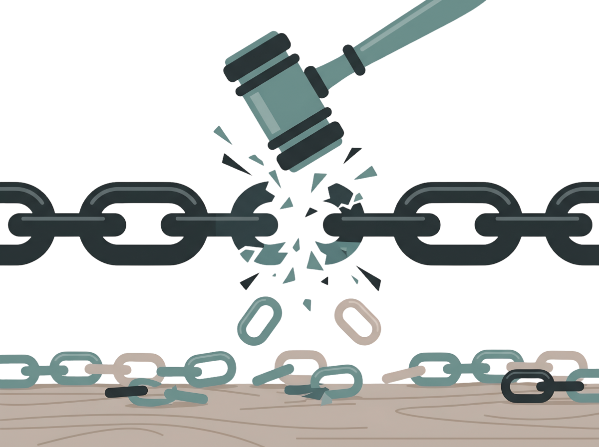
The principle: having market power is legal; abusing anticompetitive tactics to get or keep it is not.
Owned local lines, long distance, and equipment. Settlement split off 7 “Baby Bells.”
US v. Google, 2024–25
Paid Apple ~$20B/yr for default search. Ruled an illegal monopoly (§2).
Structural vs behavioral remedy. DOJ sought a structural fix (sell Chrome). In Sept 2025 the judge chose a behavioral one: no exclusive default deals, mandatory data sharing, 6-year oversight. Google may still pay Apple — just not exclusively.
How Standard Oil Built Its Cost Advantage
Its real weapon wasn’t only buying rivals — Standard Oil relentlessly drove its average total cost (ATC) to the lowest in the industry, then undercut everyone.
Standardize the oil container → the 42-gallon barrel
↓
Uniform & stackable → far lower handling & trading cost
↓
Volume + vertical integration → the lowest ATC possible
↓
Undercut & absorb rivals → ~90% of US refining
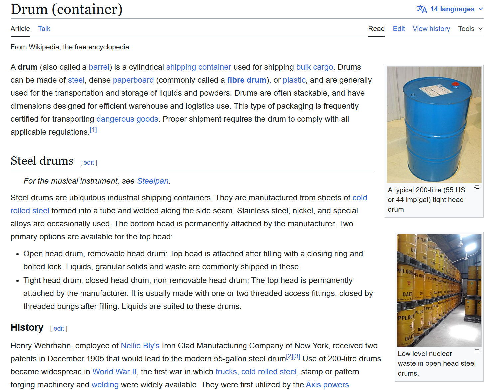
It paired that cost edge with hardball tactics — secret railroad rebates, controlling the pipelines & transport, and buying out competitors. The cost advantage was lawful; the tactics are what drew the antitrust suit.
Standard Oil v. United States (1911)
The Sherman Act makes “restraint of trade” and “monopolization” illegal felonies.
The case. The government sued Standard Oil, arguing it had become an illegal monopoly — using anti-competitive tactics (buying out rivals, controlling transport) to crush all competition.
The outcome. The Supreme Court agreed this was a restraint of trade and ordered Standard Oil broken into 34 independent companies — which eventually became firms like Exxon, Mobil, and Chevron.
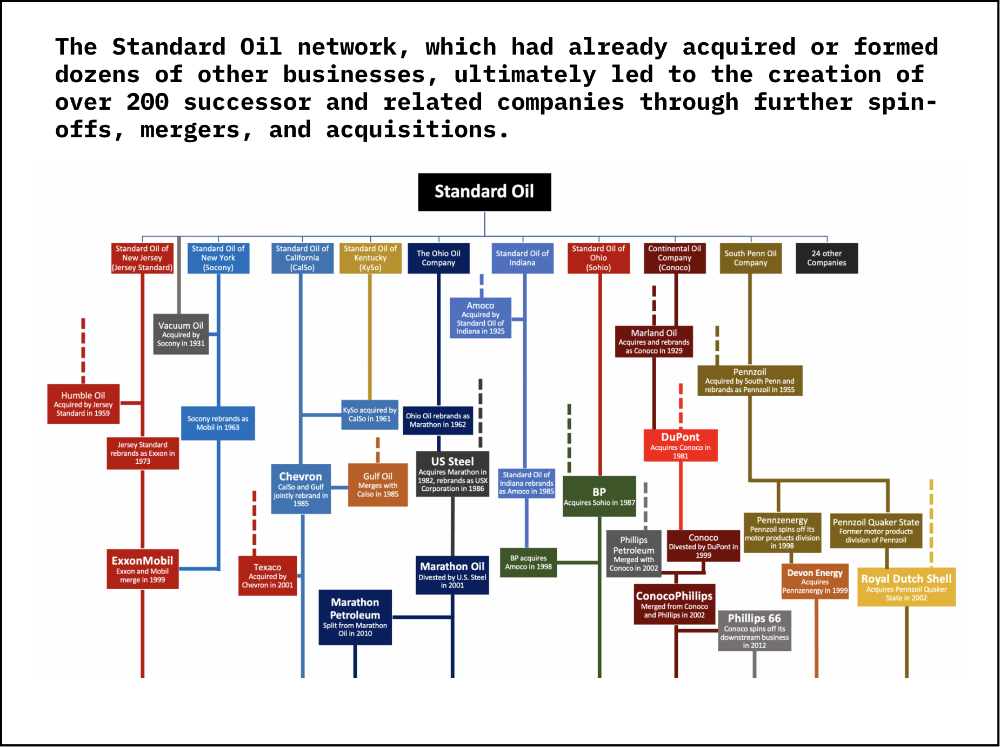
Sherman Act — United States v. AT&T (1982)
The problem (monopolization). For decades AT&T (“Ma Bell”) was a legal monopoly — it owned nearly all local lines, the entire long-distance network, and the equipment maker (Western Electric).
The restraint of trade. It used that local-line monopoly to kill competition elsewhere: it refused to let rivals like MCI connect, and forbade customers from attaching non-AT&T devices.
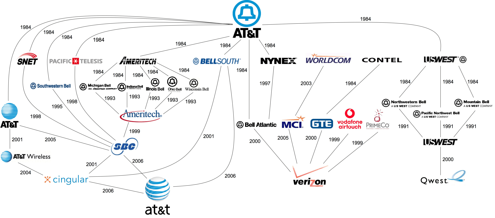
The outcome (the breakup). The 1982 settlement forced AT&T to divest its 22 local companies → 7 regional “Baby Bells” (Bell Atlantic, BellSouth, NYNEX…); the “new” AT&T was left a long-distance company forced to compete fairly.
Sherman Act — United States v. Google (2024)
The allegation (monopolization). The DOJ argued Google illegally maintained its ~90% search market share.
The restraint of trade. Google paid billions/yr to Apple, Samsung & Mozilla to be the default search engine — locking out rivals like Bing & DuckDuckGo, who couldn't afford to compete.
The outcome (Aug 2024). Judge Amit Mehta ruled Google violated Section 2 of the Sherman Act as an illegal monopolist.
The remedy (Sept 2025). DOJ wanted a structural fix (sell Chrome); the judge called that “disproportionate” and imposed a behavioral one — no exclusive default deals, must share some search data, but Google may still pay Apple, just not exclusively.
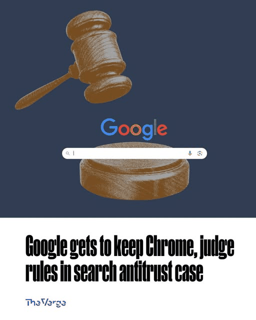
Clayton & FTC — Mergers and Dark Patterns
Clayton — mergers
AT&T / T-Mobile, 2011. The DOJ sued to block the $39B merger — it would cut four major carriers to three. AT&T abandoned the deal.
FTC — unfair / deceptive
FTC v. Amazon, 2023–25. “Dark patterns” trapped users in auto-renewing Prime; algorithm “Project Nessie” tested whether rivals would follow price hikes. Record $2.5B settlement, 35M consumers.
Clayton is preventive (stop the merger before it concentrates the market); the FTC polices conduct (how the firm treats consumers and rivals).
The Clayton Antitrust Act (1914)
What it does. Makes actions illegal if their effect is to “substantially lessen competition” — it is preventive (stops harm before it happens).
AT&T's attempted merger with T-Mobile (2011)
The case. The DOJ sued to block the $39B merger of the 2nd- and 4th-largest US mobile carriers.
The reasoning. It would “substantially lessen competition” in wireless → higher prices, fewer choices.
The outcome. The challenge was so strong that AT&T abandoned the deal — a merger stopped before it could harm competition.
The Federal Trade Commission Act (1914)
What it does. Makes “unfair methods of competition” and “deceptive acts” illegal — the FTC's consumer-protection role.
FTC v. Amazon (2023)
The case. The FTC sued Amazon over its Prime subscription practices.
The accusation. Amazon used manipulative “dark patterns” to trick millions into auto-renewing Prime, then made cancellation overly complicated.
A textbook case of the FTC stopping deceptive acts — a record $2.5B settlement.
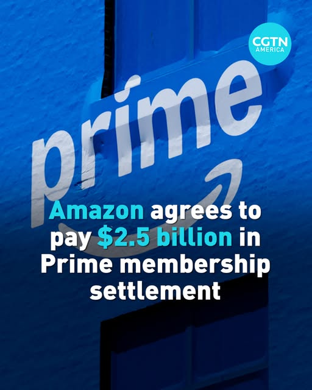
Economist at Work — The Antitrust Economists
Behind every landmark case is an economist building the analytical framework. Fiona Scott Morton (Yale SOM; former DOJ Deputy Assistant AG for Economics) shaped the reasoning in multiple Google and platform investigations.
Her 2025 work compared US and EU approaches and concluded the US trailed Europe by ~a decade on platform dominance — but was reaching the same conclusions through the courts.
These are the people who decide whether a merger creates efficiency or destroys competition.
Measuring Concentration — CR4 vs HHI
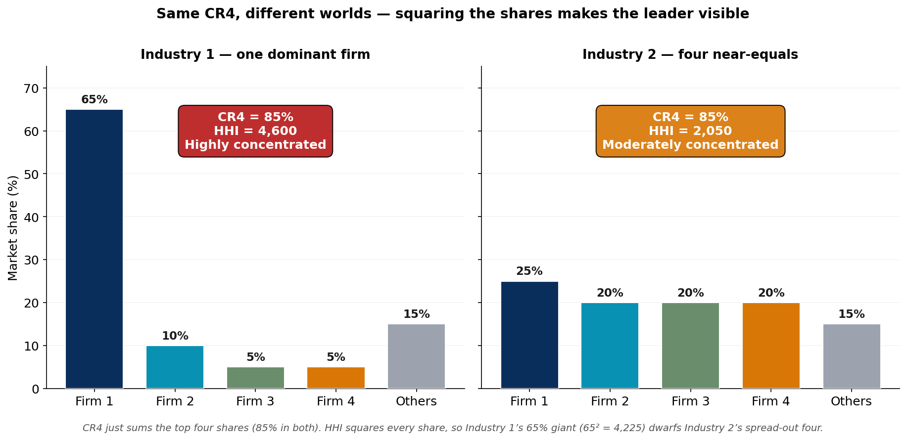
CR4 = sum of the top four firms’ shares. Easy — but blind to how lopsided they are.
HHI = sum of squared shares (0 → 10,000). Squaring makes a dominant firm jump out. The DOJ uses it in every merger review.
Same CR4 = 85%, very different worlds: one 65% giant (HHI 4,600) vs four near-equals (HHI 2,050).
The DOJ Thresholds — and a Live Example
HHI
Reading
< 1,500
Unconcentrated — mergers OK
1,500–2,500
Moderate — challenge if Δ ≥ 200
> 2,500
Highly concentrated — challenge if Δ > 100
$400B cloud market, 2025
AWS ~30% (900 pts), Azure ~20% (400), Google Cloud ~13% (169). If Azure + Google Cloud merged → 33% share = 1,089 pts, a +520 jump (vs 400 + 169).
The DOJ would almost certainly sue to block it.
HHI uses whole-number shares (40² = 1,600), not decimals — so the thresholds are 1,500 / 2,500 / 100–200.
Interactive — The HHI Concentration Ruler (Figure 11.3)
HHI = sum of squared market shares. Pick an industry to drop it on the 0–10,000 ruler, then simulate a merger of the two biggest firms — the jump is the cross-term 2×s₁×s₂.
Contestable Markets — When the Threat Is Enough
Baumol, 1982
Even a single firm prices competitively if entry is credible. With low sunk costs, a “hit-and-run” entrant disciplines the incumbent. A small-town gas station may price like a competitor.
When it breaks down
Contestability assumes low sunk costs. A frontier AI run (~$1B), hyperscale data centers, gigawatts of power — none recoverable if you fail. The desert highway’s lone station can charge monopoly prices.
The real question isn’t how concentrated a market is — it’s whether a credible challenger could actually enter. When the moat costs billions to cross, pure contestability is an illusion.
Monopoly or Contestable Market? — Microsoft, 1998
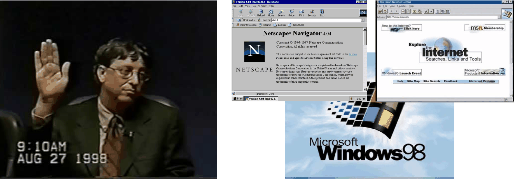
In 1998 the DOJ called Microsoft an illegal monopoly — bundling Internet Explorer with Windows to crush Netscape. Microsoft’s defense: the market is contestable — new technology could displace us at any time. Who was right?
Contestable in Action — the Browser Wars
“Of far greater concern to Microsoft is the competition from new and emerging technologies, some of which are currently visible and others of which certainly are not… This array of known, emerging, and wholly unknown competitors places enormous pressure on Microsoft to price competitively and innovate aggressively.”
He was right: IE’s near-monopoly was displaced by Chrome. The threat of entry — even from a company not yet visible — was real.
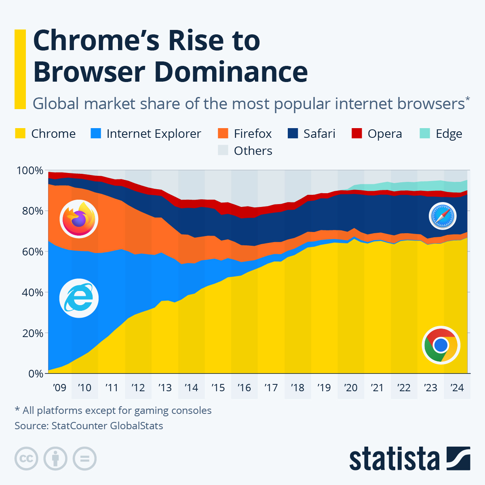
Contestable Today? — Cloud Computing
Just like frontier AI today, the cloud once had massive sunk costs (data centers, fiber). But as the industry matured, Microsoft and Google entered — Amazon’s lead narrowed (53.7% → 47.8%). High sunk costs can fall over time, turning a near-monopoly into a contestable market.
Think Like an Economist — You’re at the DOJ
A merger is proposed between the #2 and #3 firms in an industry with shares 35% · 25% · 20% · 10%.
Compute the pre- and post-merger HHI. Would you challenge it? What else would you want to know beyond HHI?
Pre = 35²+25²+20²+10² = 2,350. Post (25+20=45): 45²+35²+10² = 3,350. Δ = +1,000.
3 min
Appendix — The Lerner Index of Market Power
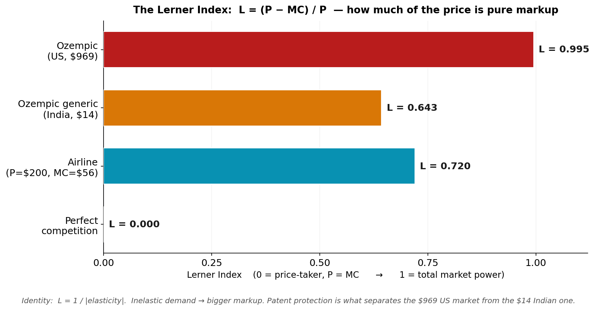
Lerner Index: L = (P − MC) / P. The share of price that is pure markup. 0 = price-taker, 1 = total power.
The identity L = 1 / |elasticity| ties it all together: inelastic demand → bigger markup. That’s exactly why price discrimination works — charge the inelastic group a higher markup.
Ozempic: 0.995 in the patent-protected US vs 0.643 against Indian generics. The patent is the gap.
Key Takeaways
1. Barriers make the monopoly. Key inputs, switching costs/network effects, branding, scale, or government grants — physical moats became digital ones.
2. MR < P, so produce where MR = MC. Read price up on demand. The monopolist restricts output and charges above MC.
3. Monopoly costs society. Deadweight loss + rent-seeking + X-inefficiency — possibly offset by funded innovation.
4. Price discrimination captures surplus — first (personal), second (menu/self-select), third (observable group). AI is closing in on first.
5. Antitrust polices abuse, not power. Sherman / Clayton / FTC; CR4 & HHI measure concentration; contestability can discipline — until sunk costs get too big.
Next time: Chapter 12 — Monopolistic Competition. What happens when many firms each have a sliver of power?
Connections
Building On
Ch 5–6: Surplus, the First Welfare Theorem, elasticity